name: cover <img src="assets/img/peerigon.svg" style="width: 30%; margin-top: 7%; margin-bottom: -7%;"> # Frontend management – yesterday, today and tomorrow? .slide-author[ Johannes Ewald<br> .small[@jhnns / johannes.ewald@peerigon.com]<br> <br> Richard Stromer<br> .small[@noxannet / hello@noxan.net]<br> ] --- layout: true class: center, middle .slide-header-left[ Frontend management – yesterday, today and tomorrow? ] .slide-header-right[ Web&Wine ] --- ## Johannes - Co-Founder Peerigon GmbH - Open Source enthusiast - Teaching JavaScript at the University of Applied Sciences Augsburg --- <img src="assets/img/peerigon.svg" style="width: 50%; margin-bottom: 5%;" /> - Web Consulting Company - Web / Mobile Web / Hybrid / Backends - JavaScript / Node.js - Trainings - Software Development --- ## Richard - Freelance software developer - Focus on web applications<br>(Django, AngularJS and NodeJS) --- ## Agenda - How we used to manage our frontend: 4 examples of legacy web projects - Frontend management today - Optimizing page load time with Google PageSpeed - Frontend management tomorrow? --- ## Disclaimer Biased view of JavaScript developers ahead.<br> Experience may vary depending on your background. --- ## How we used to manage our frontend 4 examples of legacy web projects --- ### roomieplanet.com --- 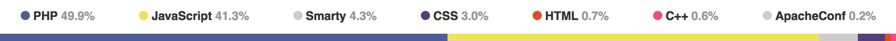 - Server-side rendering with PHP and Smarty - Almost the same amount of code already on the client-side in JavaScript --- - 273 JS files (incl. external dependencies) - No dependency manager (aka `vendor` directory) - No real module system - [MooTools Packager](https://github.com/kamicane/packager) as build tool - Minified via [jsmin.php](https://github.com/rgrove/jsmin-php/) --- 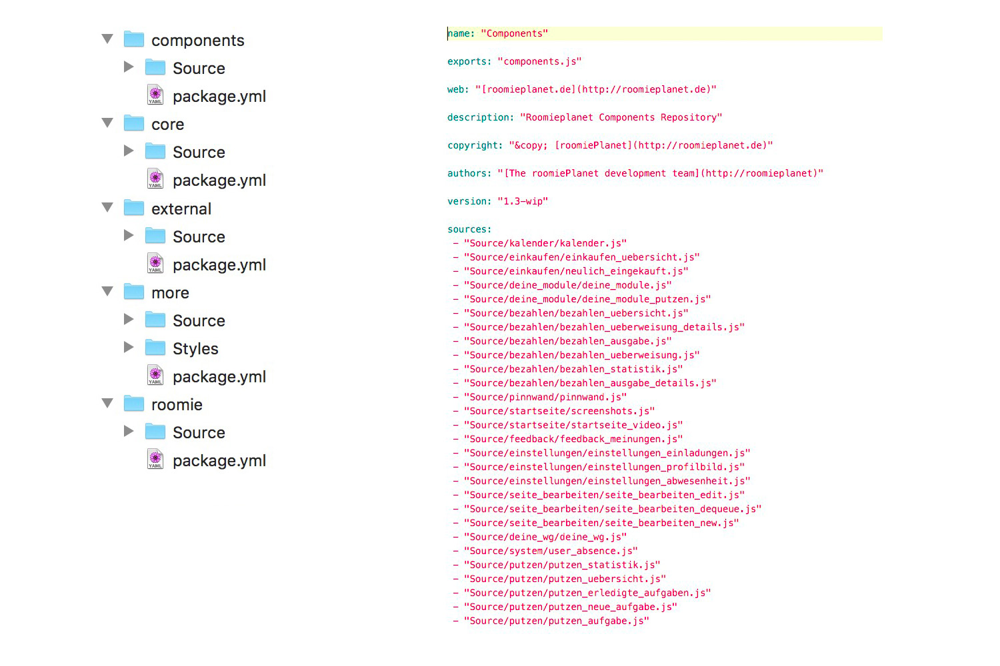 - All JS code is split into 5 repositories each providing a `package.yaml` --- 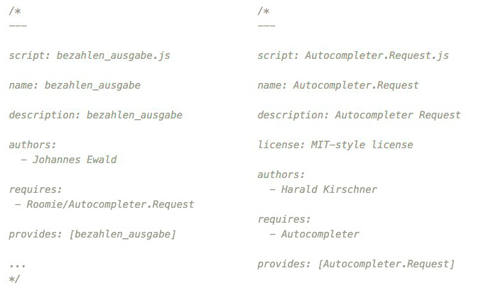 - Every JS file contains imports and exports --- 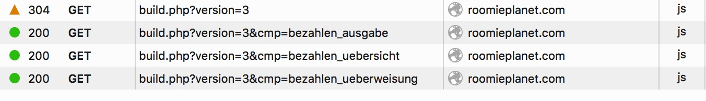 - `build.php` responsible for building (and caching) JS builds - One file for common JS code + one file per page --- - A single `main.css` for all pages - No preprocessor - No minifier --- - No assets/file handling - No image compressor --- ### moonid.net --- - Classic Django website (Server side rendering) - Staticfiles (JS, CSS, Images...) managed by Django - Contains 23 JS files - Weird combination of CSS, LESS and SASS - Building of SASS files via Makefile - JS files included directly via templates<br>Combination of jQuery plugins, vendor files, global and site depending snippets --- ### example3.com TODO @jhnns --- ### mybraintraining.com - Django compressor - Build process for SASS and CoffeeScript - Template as entry point with TemplateTag - Minified JavaScript, but vendor files extra, feature specific snippets - Combined CSS files, including vendor, but not minified - Increasing percentage of JavaScript vs. Python, loading of graph data and modals via AJAX TODO @noxan --- ## Frontend management today --- <div style="position: absolute; left: 35%; top: 10%; width: 30%;"> <h3>Task Runners</h3> </div> <div style="position: absolute; left: 65%; top: 30%; width: 30%;"> 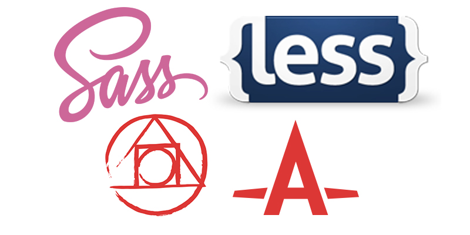 <h3>CSS Processors</h3> </div> <div style="position: absolute; left: 55%; top: 60%; width: 30%;"> <h3>HTML Templates</h3> </div> <div style="position: absolute; left: 15%; top: 60%; width: 30%;"> <h3>JS Transpilers</h3> </div> <div style="position: absolute; left: 5%; top: 30%; width: 30%;"> <h3>Bundlers</h3> </div> --- ### Task Runners <span style="color: grey">*Examples: Grunt, Gulp*</span> --- ### Task Runners - Basically like Makefiles, but written in JS - Run tasks in a predefined order - Load custom tasks via NPM - Tasks can be applied on a set of files ("glob") - Can not understand the contents of a file - Do not have a notion of dependencies --- ### CSS Processors <span style="color: grey">*Examples: Sass, Less, PostCSS/Autoprefixer*</span> --- ### CSS Processors - Extend CSS with useful features like variables or selector nesting - Provide tools to avoid repetition --- ### HTML Templates <span style="color: grey">*Examples: Jade, Handlebars*</span> --- ### HTML Templates - Classical templating - Also avoid repetition - Are often shipped as two-way data binding in your client MV* framework --- ### JS Transpilers <span style="color: grey">*Examples: Babel, CoffeeScript*</span> --- ### JS Transpilers - Compile to JS - Provide custom syntax to solve specific problems more concisely - "Playground" for new ECMAScript features --- ### Bundlers <span style="color: grey">*Examples: Browserify, Webpack*</span> --- ### Bundlers - Put all JS files into one or multiple "bundles" (bigger JS files) - Figure out the *dependency tree* by scaning the *abstract syntax tree (AST)* for dependencies --- 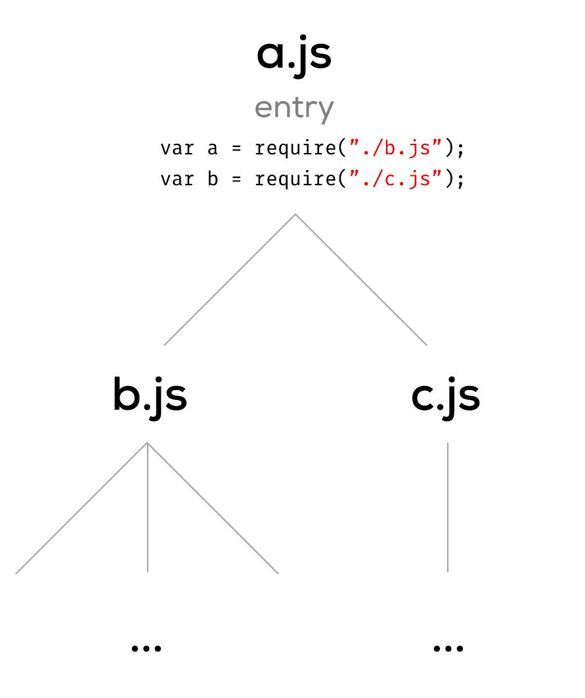 <span style="color: grey">*Dependency tree*</span> --- `bundle.js` ```javascript ({ "./a.js": function(module, exports, require) { var b = require("./b.js"); var c = require("./c.js"); }, "./b.js": function(module, exports, require) { ... }, "./c.js": function(module, exports, require) { ... }}) ``` --- But websites are more than just JavaScript: - HTML - CSS - Fonts - Images What if we could treat them like regular modules? --- `Home.js` ```javascript var Home = View.extend({ template: require("./Home.html"), styles: require("./Home.css") }); ``` `Home.js` requires `Home.html` and `Home.css` --- `Home.html` ```html <div> <h1>Home</h1> <img src="assets/img/peerigon.svg"> </div> ``` `Home.html` requires `peerigon.svg` --- `Home.css` ```css @import "reset.css"; @font-face { font-family: 'Yanone Kaffeesatz'; src: url(assets/fonts/kaffeesatz.woff) format('opentype'); } #home { background-image: url(assets/img/peerigon.svg); } ``` `Home.css` requires `reset.css`, `kaffeesatz.woff` and `peerigon.svg` --- ### Bundlers - Provide the possibility to include other files like HTML and CSS via transforms/loaders --- How does that work? --- The `html-loader` for example reads the required HTML file and generates this: ```javascript module.exports = "<div><h1>Home</h1><img src=\"" + __webpack_require__(6) + "\"></div>"; ``` All text files (JS, HTML, CSS, Less, Sass, etc.) are included as JS string into the bundle --- ... and what about binary data like the referenced image? --- The `file-loader` copies the referenced image to the output folder and creates a JS module that returns the URL for that resource: ```javascript module.exports = __webpack_require__.p + "8f73676dc795be128a9bc94a2695e3be.svg" ``` --- ```javascript module.exports = "<div><h1>Home</h1><img src=\"" + __webpack_require__(6) + "\"></div>"; ``` ```javascript module.exports = __webpack_require__.p + "8f73676dc795be128a9bc94a2695e3be.svg" ``` --- Loaders/transforms can be chained in order to create powerful build chains ```javascript require("style-loader!css-loader!less-loader!./main.less"); ``` --- ```javascript require("style-loader!css-loader!less-loader!./main.less"); ``` - The `less-loader` compiles LESS to CSS and returns it -- - The `css-loader` traverses the CSS AST for referenced resources and generates a JS module which exports the CSS as string -- - The `style-loader` takes that string and appends it to the DOM as `style` tag --- Thus, bundlers are *intelligent* build tools that allow us to hook-in custom functionality based on ASTs --- ### So, why do we use all these tools? .flex-ltr[ <div></div> <div></div> <div></div> <div></div> <div></div> ] --- We want to ease development... -- ...while maintaining the best performance in production. --- ## Optimizing page load time with Google PageSpeed TODO @noxan --- URL: staging.devisio.net Strategy: mobile Speed: 75 Usability: 100 CSS size | 853 B HTML size | 636 B JavaScript size | 218.32 kB CSS resources | 1 Hosts | 3 JS resources | 3 Resources | 8 Static resources | 4 Other size | 23.2 kB Total size of request bytes sent | 485 B Minimize render blocking resources | 24 Prioritize visible content | 8 --- ### Rules - Compression - Caching - Minify and optimize size (HTML, JS, CSS, Images) - Avoid redirects on landing pages - Server response time - Prioritize visible content - Async JS and CSS loading (non render-blocking) --- ### Async JavaScript and CSS loading - script.js - load css with different media, e.g. `only x` --- ## Frontend management tomorrow? --- These web features will change the way we build web apps: - HTTP2 - ES2015 modules and `System.import()` - Web Components --- ### HTTP2 <small style="position: absolute; left: 30%; right: 30%; bottom: 20%; text-align: center">Based on [Ilya Grigorik's talk at Velocity 2015](https://www.youtube.com/watch?v=yURLTwZ3ehk)</small> --- Problems with HTTP1: - <span style="color: red">Limited parallelism</span> - Parallelism is limited by number of connections 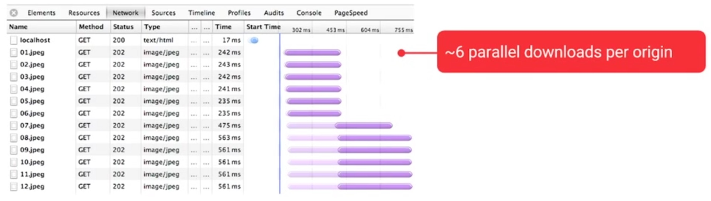 --- Problems with HTTP1: - <span style="color: red">Head-of-line blocking</span> - Request queuing and delayed request dispatch on the client - Strict response ordering on the server @TODO image --- Problems with HTTP1: - <span style="color: red">High protocol overhead</span> - Since requests should be stateless, all headers are re-sent again and again - Headers can not be compressed --- Features in HTTP2: - <span style="color: green">Parallelism by multiplexing</span> --- HTTP2 is a binary protocol 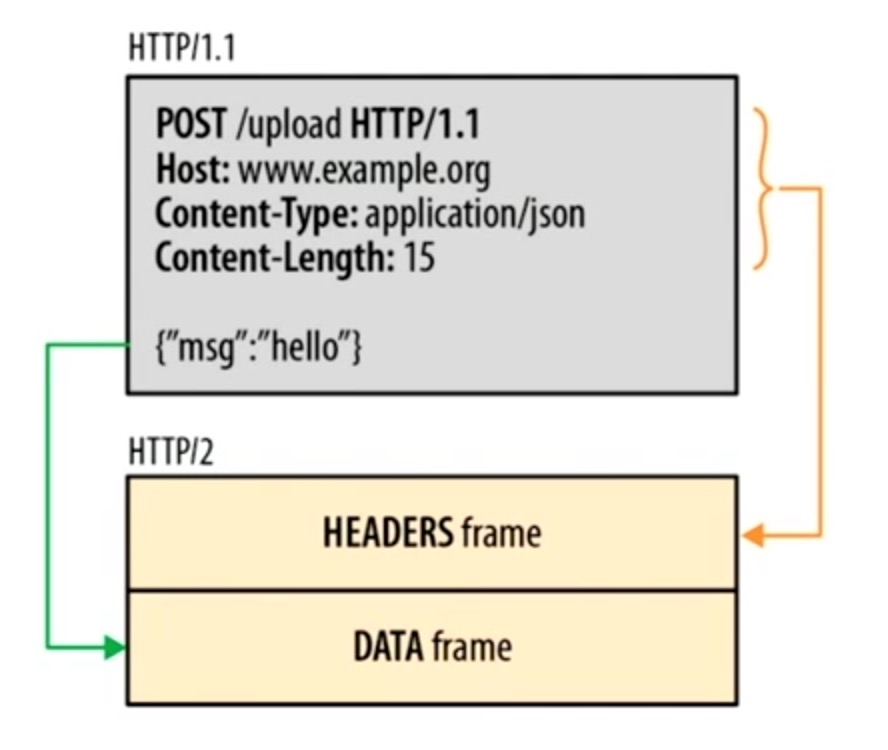 --- Frames can be interleaved on a single TCP connection 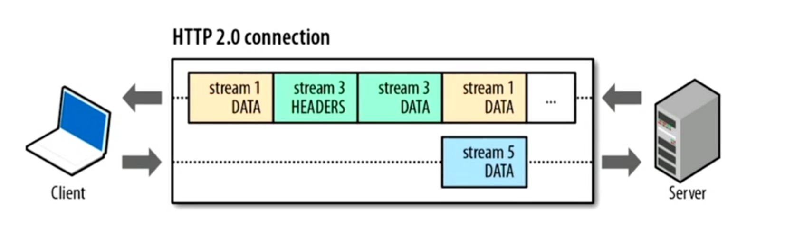 --- Yields to more efficient use of bandwidth 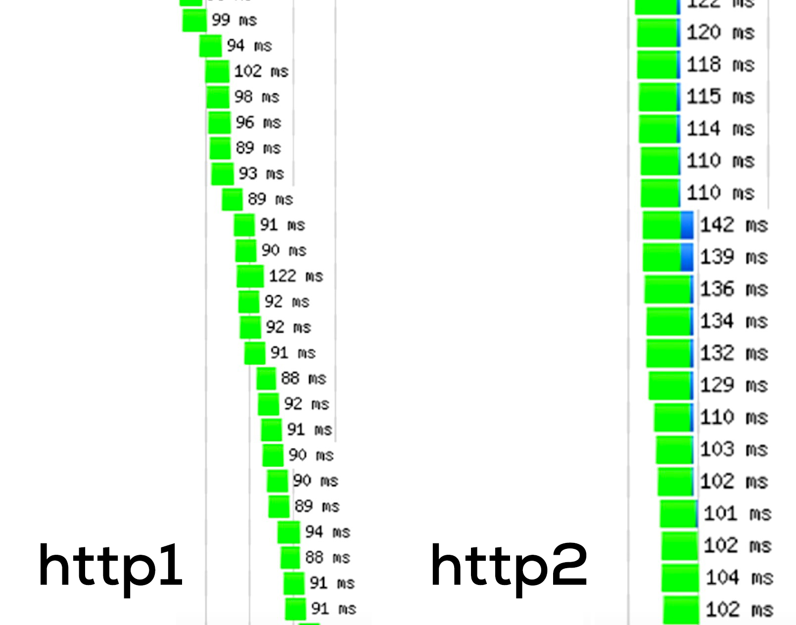 <small>[Source: HTTP/2 101 Chrome Dev Summit 2015](https://www.youtube.com/watch?v=r5oT_2ndjms)</small> --- Features in HTTP2: - <span style="color: green">Parallelism by multiplexing</span> - <span style="color: green">Response prioritization</span> - <span style="color: green">Header compression</span> -- - <span style="color: green">Server push</span> --- Server push 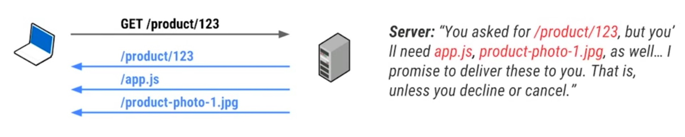 --- Server push is equivalent to "inlining", except... -- ...it delivers granular resources which can be cached and prioritized individually. --- What do we need to provide server push? --- @TODO Add image of dependency tree with HTML, CSS and images --- This can be accomplished by... -- - empirical analysis *("soon after delivering `index.html`, the same client also asked for `image.jpg`")* -- - tools like bundlers which figure out the dependency tree --- Proposal: Push Manifest @TODO add example --- ### ES2015 modules and `System.import()` --- What are ES2015 modules? --- <span style="color: grey">*magicNumber.js*</span> ```javascript let magicNumber = 42; export default magicNumber; ``` <span style="color: grey">*main.js*</span> ```javascript import magicNumber from "./magicNumber.js"; ``` --- Looks almost like CommonJS, right? <span style="color: grey">*magicNumber.js*</span> ```javascript let magicNumber = 42; module.exports = magicNumber; ``` <span style="color: grey">*main.js*</span> ```javascript let magicNumber = require("./magicNumber.js"); ``` --- Nope. --- CommonJS resolves values... - on runtime - one-time --- ES2015 modules resolve values... - on compilation - live --- On runtime vs. on compilation .flex-ltr[ ```javascript let mylib; if (Math.random() < 0.5) { mylib = require("foo"); } else { mylib = require("bar"); } ``` ```javascript if (Math.random() < 0.5) { import myyLib from "foo"; } else { import myyLib from "bar"; } // throws a SyntaxError ``` ] --- One-time vs. live .flex-ltr[ ```javascript let mylib; if (Math.random() < 0.5) { mylib = require("foo"); } else { mylib = require("bar"); } ``` ```javascript if (Math.random() < 0.5) { import myyLib from "foo"; } else { import myyLib from "bar"; } // throws a SyntaxError ``` ] --- What is the Loader spec? --- ### Web Components --- ## Conclusion - AST tools > DSL --- ## Thank you Johannes Ewald<br> @jhnns<br> johannes.ewald@peerigon.com<br> <br> Richard Stromer<br> @noxannet<br> hello@noxan.net